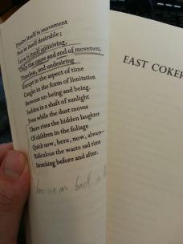

Visualizing Repetition in T.S. Eliot's Four Quartets
by willkurt
Table of contents
Introduction
Long before becoming interested in computer science I was an English major. Continuing from that time to the present has been my love of T.S. Eliot’s “Four Quartets”. Both for fun and work I do a fair bit of Natural Language Processing (NLP) work and have been thinking of ways to combine these two interests in my life.
Everytime I read or listen to the “Four Quartets” I’m struck by the complex repetition of themes and verses. My dog-eared copy of the poem from college has many notes pointing out which lines reference which other lines. For years I’ve thought of manually graphing out these connections but I wondered if there might be another way.
So I decided to put my nlp experience to work and come up with a way to represent some aspects of this representation visually

What you see here is a “cosine similarity matrix”, the technical details of which are discussed after the poem. In straightforward terms what you are seeing is a grid where each square visually represents the similarity between any given 2 lines of the poem. The lighter the color the more similar the lines. This also explains the persistent diagonal line in all images, each square here show each lines similarly with itself, which of course is a 100% match.
This visualization allows us to explore poetry and lyrical verse in a new light. Rather than scribble notes on paper, never really seeing the big picture, we can now visually understand the structure of repetition in a given work.
Following is the full-text of “Four Quartets” with a visualization accompanying each section.
Four Quartets
Burnt Norton
Time present and time past
Are both perhaps present in time future,
And time future contained in time past.
If all time is eternally present
All time is unredeemable.
What might have been is an abstraction
Remaining a perpetual possibility
Only in a world of speculation.
What might have been and what has been
Point to one end, which is always present.
Footfalls echo in the memory
Down the passage which we did not take
Towards the door we never opened
Into the rose-garden. My words echo
Thus, in your mind.
But to what purpose
Disturbing the dust on a bowl of rose-leaves
I do not know.
Other echoes
Inhabit the garden. Shall we follow?
Quick, said the bird, find them, find them,
Round the corner. Through the first gate,
Into our first world, shall we follow
The deception of the thrush? Into our first world.
There they were, dignified, invisible,
Moving without pressure, over the dead leaves,
In the autumn heat, through the vibrant air,
And the bird called, in response to
The unheard music hidden in the shrubbery,
And the unseen eyebeam crossed, for the roses
Had the look of flowers that are looked at.
There they were as our guests, accepted and accepting.
So we moved, and they, in a formal pattern,
Along the empty alley, into the box circle,
To look down into the drained pool.
Dry the pool, dry concrete, brown edged,
And the pool was filled with water out of sunlight,
And the lotos rose, quietly, quietly,
The surface glittered out of heart of light,
And they were behind us, reflected in the pool.
Then a cloud passed, and the pool was empty.
Go, said the bird, for the leaves were full of children,
Hidden excitedly, containing laughter.
Go, go, go, said the bird: human kind
Cannot bear very much reality.
Time past and time future
What might have been and what has been
Point to one end, which is always present.

Garlic and sapphires in the mud
Clot the bedded axle-tree.
The trilling wire in the blood
Sings below inveterate scars
Appeasing long forgotten wars.
The dance along the artery
The circulation of the lymph
Are figured in the drift of stars
Ascend to summer in the tree
We move above the moving tree
In light upon the figured leaf
And hear upon the sodden floor
Below, the boarhound and the boar
Pursue their pattern as before
But reconciled among the stars.
At the still point of the turning world. Neither flesh nor fleshless;
Neither from nor towards; at the still point, there the dance is,
But neither arrest nor movement. And do not call it fixity,
Where past and future are gathered. Neither movement from nor towards,
Neither ascent nor decline. Except for the point, the still point,
There would be no dance, and there is only the dance.
I can only say, there we have been: but I cannot say where.
And I cannot say, how long, for that is to place it in time.
The inner freedom from the practical desire,
The release from action and suffering, release from the inner
And the outer compulsion, yet surrounded
By a grace of sense, a white light still and moving,
Erhebung without motion, concentration
Without elimination, both a new world
And the old made explicit, understood
In the completion of its partial ecstasy,
The resolution of its partial horror.
Yet the enchainment of past and future
Woven in the weakness of the changing body,
Protects mankind from heaven and damnation
Which flesh cannot endure.
Time past and time future
Allow but a little consciousness.
To be conscious is not to be in time
But only in time can the moment in the rose-garden,
The moment in the arbour where the rain beat,
The moment in the draughty church at smokefall
Be remembered; involved with past and future.
Only through time time is conquered.

Here is a place of disaffection
Time before and time after
In a dim light: neither daylight
Investing form with lucid stillness
Turning shadow into transient beauty
With slow rotation suggesting permanence
Nor darkness to purify the soul
Emptying the sensual with deprivation
Cleansing affection from the temporal.
Neither plenitude nor vacancy. Only a flicker
Over the strained time-ridden faces
Distracted from distraction by distraction
Filled with fancies and empty of meaning
Tumid apathy with no concentration
Men and bits of paper, whirled by the cold wind
That blows before and after time,
Wind in and out of unwholesome lungs
Time before and time after.
Eructation of unhealthy souls
Into the faded air, the torpid
Driven on the wind that sweeps the gloomy hills of London,
Hampstead and Clerkenwell, Campden and Putney,
Highgate, Primrose and Ludgate. Not here
Not here the darkness, in this twittering world.
Descend lower, descend only
Into the world of perpetual solitude,
World not world, but that which is not world,
Internal darkness, deprivation
And destitution of all property,
Desiccation of the world of sense,
Evacuation of the world of fancy,
Inoperancy of the world of spirit;
This is the one way, and the other
Is the same, not in movement
But abstention from movement; while the world moves
In appetency, on its metalled ways
Of time past and time future.

Time and the bell have buried the day,
The black cloud carries the sun away.
Will the sunflower turn to us, will the clematis
Stray down, bend to us; tendril and spray
Clutch and cling?
Chill
Fingers of yew be curled
Down on us? After the kingfisher's wing
Has answered light to light, and is silent, the light is still
At the still point of the turning world.

Words move, music moves
Only in time; but that which is only living
Can only die. Words, after speech, reach
Into the silence. Only by the form, the pattern,
Can words or music reach
The stillness, as a Chinese jar still
Moves perpetually in its stillness.
Not the stillness of the violin, while the note lasts,
Not that only, but the co-existence,
Or say that the end precedes the beginning,
And the end and the beginning were always there
Before the beginning and after the end.
And all is always now. Words strain,
Crack and sometimes break, under the burden,
Under the tension, slip, slide, perish,
Decay with imprecision, will not stay in place,
Will not stay still. Shrieking voices
Scolding, mocking, or merely chattering,
Always assail them. The Word in the desert
Is most attacked by voices of temptation,
The crying shadow in the funeral dance,
The loud lament of the disconsolate chimera.
The detail of the pattern is movement,
As in the figure of the ten stairs.
Desire itself is movement
Not in itself desirable;
Love is itself unmoving,
Only the cause and end of movement,
Timeless, and undesiring
Except in the aspect of time
Caught in the form of limitation
Between un-being and being.
Sudden in a shaft of sunlight
Even while the dust moves
There rises the hidden laughter
Of children in the foliage
Quick now, here, now, always—
Ridiculous the waste sad time
Stretching before and after.
East Coker

In my beginning is my end. In succession
Houses rise and fall, crumble, are extended,
Are removed, destroyed, restored, or in their place
Is an open field, or a factory, or a by-pass.
Old stone to new building, old timber to new fires,
Old fires to ashes, and ashes to the earth
Which is already flesh, fur and faeces,
Bone of man and beast, cornstalk and leaf.
Houses live and die: there is a time for building
And a time for living and for generation
And a time for the wind to break the loosened pane
And to shake the wainscot where the field-mouse trots
And to shake the tattered arras woven with a silent motto.
In my beginning is my end. Now the light falls
Across the open field, leaving the deep lane
Shuttered with branches, dark in the afternoon,
Where you lean against a bank while a van passes,
And the deep lane insists on the direction
Into the village, in the electric heat
Hypnotised. In a warm haze the sultry light
Is absorbed, not refracted, by grey stone.
The dahlias sleep in the empty silence.
Wait for the early owl.
In that open field
If you do not come too close, if you do not come too close,
On a summer midnight, you can hear the music
Of the weak pipe and the little drum
And see them dancing around the bonfire
The association of man and woman
In daunsinge, signifying matrimonie—
A dignified and commodiois sacrament.
Two and two, necessarye coniunction,
Holding eche other by the hand or the arm
Whiche betokeneth concorde. Round and round the fire
Leaping through the flames, or joined in circles,
Rustically solemn or in rustic laughter
Lifting heavy feet in clumsy shoes,
Earth feet, loam feet, lifted in country mirth
Mirth of those long since under earth
Nourishing the corn. Keeping time,
Keeping the rhythm in their dancing
As in their living in the living seasons
The time of the seasons and the constellations
The time of milking and the time of harvest
The time of the coupling of man and woman
And that of beasts. Feet rising and falling.
Eating and drinking. Dung and death.
Dawn points, and another day
Prepares for heat and silence. Out at sea the dawn wind
Wrinkles and slides. I am here
Or there, or elsewhere. In my beginning.

What is the late November doing
With the disturbance of the spring
And creatures of the summer heat,
And snowdrops writhing under feet
And hollyhocks that aim too high
Red into grey and tumble down
Late roses filled with early snow?
Thunder rolled by the rolling stars
Simulates triumphal cars
Deployed in constellated wars
Scorpion fights against the Sun
Until the Sun and Moon go down
Comets weep and Leonids fly
Hunt the heavens and the plains
Whirled in a vortex that shall bring
The world to that destructive fire
Which burns before the ice-cap reigns.
That was a way of putting it—not very satisfactory:
A periphrastic study in a worn-out poetical fashion,
Leaving one still with the intolerable wrestle
With words and meanings. The poetry does not matter.
It was not (to start again) what one had expected.
What was to be the value of the long looked forward to,
Long hoped for calm, the autumnal serenity
And the wisdom of age? Had they deceived us
Or deceived themselves, the quiet-voiced elders,
Bequeathing us merely a receipt for deceit?
The serenity only a deliberate hebetude,
The wisdom only the knowledge of dead secrets
Useless in the darkness into which they peered
Or from which they turned their eyes. There is, it seems to us,
At best, only a limited value
In the knowledge derived from experience.
The knowledge imposes a pattern, and falsifies,
For the pattern is new in every moment
And every moment is a new and shocking
Valuation of all we have been. We are only undeceived
Of that which, deceiving, could no longer harm.
In the middle, not only in the middle of the way
But all the way, in a dark wood, in a bramble,
On the edge of a grimpen, where is no secure foothold,
And menaced by monsters, fancy lights,
Risking enchantment. Do not let me hear
Of the wisdom of old men, but rather of their folly,
Their fear of fear and frenzy, their fear of possession,
Of belonging to another, or to others, or to God.
The only wisdom we can hope to acquire
Is the wisdom of humility: humility is endless.
The houses are all gone under the sea.
The dancers are all gone under the hill.

O dark dark dark. They all go into the dark,
The vacant interstellar spaces, the vacant into the vacant,
The captains, merchant bankers, eminent men of letters,
The generous patrons of art, the statesmen and the rulers,
Distinguished civil servants, chairmen of many committees,
Industrial lords and petty contractors, all go into the dark,
And dark the Sun and Moon, and the Almanach de Gotha
And the Stock Exchange Gazette, the Directory of Directors,
And cold the sense and lost the motive of action.
And we all go with them, into the silent funeral,
Nobody's funeral, for there is no one to bury.
I said to my soul, be still, and let the dark come upon you
Which shall be the darkness of God. As, in a theatre,
The lights are extinguished, for the scene to be changed
With a hollow rumble of wings, with a movement of darkness on darkness,
And we know that the hills and the trees, the distant panorama
And the bold imposing facade are all being rolled away—
Or as, when an underground train, in the tube, stops too long between stations
And the conversation rises and slowly fades into silence
And you see behind every face the mental emptiness deepen
Leaving only the growing terror of nothing to think about;
Or when, under ether, the mind is conscious but conscious of nothing—
I said to my soul, be still, and wait without hope
For hope would be hope for the wrong thing; wait without love,
For love would be love of the wrong thing; there is yet faith
But the faith and the love and the hope are all in the waiting.
Wait without thought, for you are not ready for thought:
So the darkness shall be the light, and the stillness the dancing.
Whisper of running streams, and winter lightning.
The wild thyme unseen and the wild strawberry,
The laughter in the garden, echoed ecstasy
Not lost, but requiring, pointing to the agony
Of death and birth.
You say I am repeating
Something I have said before. I shall say it again.
Shall I say it again? In order to arrive there,
To arrive where you are, to get from where you are not,
You must go by a way wherein there is no ecstasy.
In order to arrive at what you do not know
You must go by a way which is the way of ignorance.
In order to possess what you do not possess
You must go by the way of dispossession.
In order to arrive at what you are not
You must go through the way in which you are not.
And what you do not know is the only thing you know
And what you own is what you do not own
And where you are is where you are not.

The wounded surgeon plies the steel
That questions the distempered part;
Beneath the bleeding hands we feel
The sharp compassion of the healer's art
Resolving the enigma of the fever chart.
Our only health is the disease
If we obey the dying nurse
Whose constant care is not to please
But to remind of our, and Adam's curse,
And that, to be restored, our sickness must grow worse.
The whole earth is our hospital
Endowed by the ruined millionaire,
Wherein, if we do well, we shall
Die of the absolute paternal care
That will not leave us, but prevents us everywhere.
The chill ascends from feet to knees,
The fever sings in mental wires.
If to be warmed, then I must freeze
And quake in frigid purgatorial fires
Of which the flame is roses, and the smoke is briars.
The dripping blood our only drink,
The bloody flesh our only food:
In spite of which we like to think
That we are sound, substantial flesh and blood—
Again, in spite of that, we call this Friday good.

So here I am, in the middle way, having had twenty years— Twenty years largely wasted, the years of l'entre deux guerres Trying to use words, and every attempt Is a wholly new start, and a different kind of failure Because one has only learnt to get the better of words For the thing one no longer has to say, or the way in which One is no longer disposed to say it. And so each venture Is a new beginning, a raid on the inarticulate With shabby equipment always deteriorating In the general mess of imprecision of feeling, Undisciplined squads of emotion. And what there is to conquer By strength and submission, has already been discovered Once or twice, or several times, by men whom one cannot hope To emulate—but there is no competition— There is only the fight to recover what has been lost And found and lost again and again: and now, under conditions That seem unpropitious. But perhaps neither gain nor loss. For us, there is only the trying. The rest is not our business. Home is where one starts from. As we grow older The world becomes stranger, the pattern more complicated Of dead and living. Not the intense moment Isolated, with no before and after, But a lifetime burning in every moment And not the lifetime of one man only But of old stones that cannot be deciphered. There is a time for the evening under starlight, A time for the evening under lamplight (The evening with the photograph album). Love is most nearly itself When here and now cease to matter. Old men ought to be explorers Here or there does not matter We must be still and still moving Into another intensity For a further union, a deeper communion Through the dark cold and the empty desolation, The wave cry, the wind cry, the vast waters Of the petrel and the porpoise. In my end is my beginning.
The Dry Salvages

I do not know much about gods; but I think that the river
Is a strong brown god—sullen, untamed and intractable,
Patient to some degree, at first recognised as a frontier;
Useful, untrustworthy, as a conveyor of commerce;
Then only a problem confronting the builder of bridges.
The problem once solved, the brown god is almost forgotten
By the dwellers in cities—ever, however, implacable.
Keeping his seasons and rages, destroyer, reminder
Of what men choose to forget. Unhonoured, unpropitiated
By worshippers of the machine, but waiting, watching and waiting.
His rhythm was present in the nursery bedroom,
In the rank ailanthus of the April dooryard,
In the smell of grapes on the autumn table,
And the evening circle in the winter gaslight.
The river is within us, the sea is all about us;
The sea is the land's edge also, the granite
Into which it reaches, the beaches where it tosses
Its hints of earlier and other creation:
The starfish, the horseshoe crab, the whale's backbone;
The pools where it offers to our curiosity
The more delicate algae and the sea anemone.
It tosses up our losses, the torn seine,
The shattered lobsterpot, the broken oar
And the gear of foreign dead men. The sea has many voices,
Many gods and many voices.
The salt is on the briar rose,
The fog is in the fir trees.
The sea howl
And the sea yelp, are different voices
Often together heard: the whine in the rigging,
The menace and caress of wave that breaks on water,
The distant rote in the granite teeth,
And the wailing warning from the approaching headland
Are all sea voices, and the heaving groaner
Rounded homewards, and the seagull:
And under the oppression of the silent fog
The tolling bell
Measures time not our time, rung by the unhurried
Ground swell, a time
Older than the time of chronometers, older
Than time counted by anxious worried women
Lying awake, calculating the future,
Trying to unweave, unwind, unravel
And piece together the past and the future,
Between midnight and dawn, when the past is all deception,
The future futureless, before the morning watch
When time stops and time is never ending;
And the ground swell, that is and was from the beginning,
Clangs
The bell.

Where is there an end of it, the soundless wailing,
The silent withering of autumn flowers
Dropping their petals and remaining motionless;
Where is there and end to the drifting wreckage,
The prayer of the bone on the beach, the unprayable
Prayer at the calamitous annunciation?
There is no end, but addition: the trailing
Consequence of further days and hours,
While emotion takes to itself the emotionless
Years of living among the breakage
Of what was believed in as the most reliable—
And therefore the fittest for renunciation.
There is the final addition, the failing
Pride or resentment at failing powers,
The unattached devotion which might pass for devotionless,
In a drifting boat with a slow leakage,
The silent listening to the undeniable
Clamour of the bell of the last annunciation.
Where is the end of them, the fishermen sailing
Into the wind's tail, where the fog cowers?
We cannot think of a time that is oceanless
Or of an ocean not littered with wastage
Or of a future that is not liable
Like the past, to have no destination.
We have to think of them as forever bailing,
Setting and hauling, while the North East lowers
Over shallow banks unchanging and erosionless
Or drawing their money, drying sails at dockage;
Not as making a trip that will be unpayable
For a haul that will not bear examination.
There is no end of it, the voiceless wailing,
No end to the withering of withered flowers,
To the movement of pain that is painless and motionless,
To the drift of the sea and the drifting wreckage,
The bone's prayer to Death its God. Only the hardly, barely prayable
Prayer of the one Annunciation.
It seems, as one becomes older,
That the past has another pattern, and ceases to be a mere sequence—
Or even development: the latter a partial fallacy
Encouraged by superficial notions of evolution,
Which becomes, in the popular mind, a means of disowning the past.
The moments of happiness—not the sense of well-being,
Fruition, fulfilment, security or affection,
Or even a very good dinner, but the sudden illumination—
We had the experience but missed the meaning,
And approach to the meaning restores the experience
In a different form, beyond any meaning
We can assign to happiness. I have said before
That the past experience revived in the meaning
Is not the experience of one life only
But of many generations—not forgetting
Something that is probably quite ineffable:
The backward look behind the assurance
Of recorded history, the backward half-look
Over the shoulder, towards the primitive terror.
Now, we come to discover that the moments of agony
(Whether, or not, due to misunderstanding,
Having hoped for the wrong things or dreaded the wrong things,
Is not in question) are likewise permanent
With such permanence as time has. We appreciate this better
In the agony of others, nearly experienced,
Involving ourselves, than in our own.
For our own past is covered by the currents of action,
But the torment of others remains an experience
Unqualified, unworn by subsequent attrition.
People change, and smile: but the agony abides.
Time the destroyer is time the preserver,
Like the river with its cargo of dead negroes, cows and chicken coops,
The bitter apple, and the bite in the apple.
And the ragged rock in the restless waters,
Waves wash over it, fogs conceal it;
On a halcyon day it is merely a monument,
In navigable weather it is always a seamark
To lay a course by: but in the sombre season
Or the sudden fury, is what it always was.

I sometimes wonder if that is what Krishna meant—
Among other things—or one way of putting the same thing:
That the future is a faded song, a Royal Rose or a lavender spray
Of wistful regret for those who are not yet here to regret,
Pressed between yellow leaves of a book that has never been opened.
And the way up is the way down, the way forward is the way back.
You cannot face it steadily, but this thing is sure,
That time is no healer: the patient is no longer here.
When the train starts, and the passengers are settled
To fruit, periodicals and business letters
(And those who saw them off have left the platform)
Their faces relax from grief into relief,
To the sleepy rhythm of a hundred hours.
Fare forward, travellers! not escaping from the past
Into different lives, or into any future;
You are not the same people who left that station
Or who will arrive at any terminus,
While the narrowing rails slide together behind you;
And on the deck of the drumming liner
Watching the furrow that widens behind you,
You shall not think 'the past is finished'
Or 'the future is before us'.
At nightfall, in the rigging and the aerial,
Is a voice descanting (though not to the ear,
The murmuring shell of time, and not in any language)
'Fare forward, you who think that you are voyaging;
You are not those who saw the harbour
Receding, or those who will disembark.
Here between the hither and the farther shore
While time is withdrawn, consider the future
And the past with an equal mind.
At the moment which is not of action or inaction
You can receive this: "on whatever sphere of being
The mind of a man may be intent
At the time of death"—that is the one action
(And the time of death is every moment)
Which shall fructify in the lives of others:
And do not think of the fruit of action.
Fare forward.
O voyagers, O seamen,
You who came to port, and you whose bodies
Will suffer the trial and judgement of the sea,
Or whatever event, this is your real destination.'
So Krishna, as when he admonished Arjuna
On the field of battle.
Not fare well,
But fare forward, voyagers.

Lady, whose shrine stands on the promontory,
Pray for all those who are in ships, those
Whose business has to do with fish, and
Those concerned with every lawful traffic
And those who conduct them.
Repeat a prayer also on behalf of
Women who have seen their sons or husbands
Setting forth, and not returning:
Figlia del tuo figlio,
Queen of Heaven.
Also pray for those who were in ships, and
Ended their voyage on the sand, in the sea's lips
Or in the dark throat which will not reject them
Or wherever cannot reach them the sound of the sea bell's
Perpetual angelus.

To communicate with Mars, converse with spirits, To report the behaviour of the sea monster, Describe the horoscope, haruspicate or scry, Observe disease in signatures, evoke Biography from the wrinkles of the palm And tragedy from fingers; release omens By sortilege, or tea leaves, riddle the inevitable With playing cards, fiddle with pentagrams Or barbituric acids, or dissect The recurrent image into pre-conscious terrors— To explore the womb, or tomb, or dreams; all these are usual Pastimes and drugs, and features of the press: And always will be, some of them especially When there is distress of nations and perplexity Whether on the shores of Asia, or in the Edgware Road. Men's curiosity searches past and future And clings to that dimension. But to apprehend The point of intersection of the timeless With time, is an occupation for the saint— No occupation either, but something given And taken, in a lifetime's death in love, Ardour and selflessness and self-surrender. For most of us, there is only the unattended Moment, the moment in and out of time, The distraction fit, lost in a shaft of sunlight, The wild thyme unseen, or the winter lightning Or the waterfall, or music heard so deeply That it is not heard at all, but you are the music While the music lasts. These are only hints and guesses, Hints followed by guesses; and the rest Is prayer, observance, discipline, thought and action. The hint half guessed, the gift half understood, is Incarnation. Here the impossible union Of spheres of existence is actual, Here the past and future Are conquered, and reconciled, Where action were otherwise movement Of that which is only moved And has in it no source of movement— Driven by daemonic, chthonic Powers. And right action is freedom From past and future also. For most of us, this is the aim Never here to be realised; Who are only undefeated Because we have gone on trying; We, content at the last If our temporal reversion nourish (Not too far from the yew-tree) The life of significant soil.
Little Gidding

Midwinter spring is its own season
Sempiternal though sodden towards sundown,
Suspended in time, between pole and tropic.
When the short day is brightest, with frost and fire,
The brief sun flames the ice, on pond and ditches,
In windless cold that is the heart's heat,
Reflecting in a watery mirror
A glare that is blindness in the early afternoon.
And glow more intense than blaze of branch, or brazier,
Stirs the dumb spirit: no wind, but pentecostal fire
In the dark time of the year. Between melting and freezing
The soul's sap quivers. There is no earth smell
Or smell of living thing. This is the spring time
But not in time's covenant. Now the hedgerow
Is blanched for an hour with transitory blossom
Of snow, a bloom more sudden
Than that of summer, neither budding nor fading,
Not in the scheme of generation.
Where is the summer, the unimaginable
Zero summer?
If you came this way,
Taking the route you would be likely to take
From the place you would be likely to come from,
If you came this way in may time, you would find the hedges
White again, in May, with voluptuary sweetness.
It would be the same at the end of the journey,
If you came at night like a broken king,
If you came by day not knowing what you came for,
It would be the same, when you leave the rough road
And turn behind the pig-sty to the dull facade
And the tombstone. And what you thought you came for
Is only a shell, a husk of meaning
From which the purpose breaks only when it is fulfilled
If at all. Either you had no purpose
Or the purpose is beyond the end you figured
And is altered in fulfilment. There are other places
Which also are the world's end, some at the sea jaws,
Or over a dark lake, in a desert or a city—
But this is the nearest, in place and time,
Now and in England.
If you came this way,
Taking any route, starting from anywhere,
At any time or at any season,
It would always be the same: you would have to put off
Sense and notion. You are not here to verify,
Instruct yourself, or inform curiosity
Or carry report. You are here to kneel
Where prayer has been valid. And prayer is more
Than an order of words, the conscious occupation
Of the praying mind, or the sound of the voice praying.
And what the dead had no speech for, when living,
They can tell you, being dead: the communication
Of the dead is tongued with fire beyond the language of the living.
Here, the intersection of the timeless moment
Is England and nowhere. Never and always.

Ash on and old man's sleeve
Is all the ash the burnt roses leave.
Dust in the air suspended
Marks the place where a story ended.
Dust inbreathed was a house—
The walls, the wainscot and the mouse,
The death of hope and despair,
This is the death of air.
There are flood and drouth
Over the eyes and in the mouth,
Dead water and dead sand
Contending for the upper hand.
The parched eviscerate soil
Gapes at the vanity of toil,
Laughs without mirth.
This is the death of earth.
Water and fire succeed
The town, the pasture and the weed.
Water and fire deride
The sacrifice that we denied.
Water and fire shall rot
The marred foundations we forgot,
Of sanctuary and choir.
This is the death of water and fire.
In the uncertain hour before the morning
Near the ending of interminable night
At the recurrent end of the unending
After the dark dove with the flickering tongue
Had passed below the horizon of his homing
While the dead leaves still rattled on like tin
Over the asphalt where no other sound was
Between three districts whence the smoke arose
I met one walking, loitering and hurried
As if blown towards me like the metal leaves
Before the urban dawn wind unresisting.
And as I fixed upon the down-turned face
That pointed scrutiny with which we challenge
The first-met stranger in the waning dusk
I caught the sudden look of some dead master
Whom I had known, forgotten, half recalled
Both one and many; in the brown baked features
The eyes of a familiar compound ghost
Both intimate and unidentifiable.
So I assumed a double part, and cried
And heard another's voice cry: 'What! are you here?'
Although we were not. I was still the same,
Knowing myself yet being someone other—
And he a face still forming; yet the words sufficed
To compel the recognition they preceded.
And so, compliant to the common wind,
Too strange to each other for misunderstanding,
In concord at this intersection time
Of meeting nowhere, no before and after,
We trod the pavement in a dead patrol.
I said: 'The wonder that I feel is easy,
Yet ease is cause of wonder. Therefore speak:
I may not comprehend, may not remember.'
And he: 'I am not eager to rehearse
My thoughts and theory which you have forgotten.
These things have served their purpose: let them be.
So with your own, and pray they be forgiven
By others, as I pray you to forgive
Both bad and good. Last season's fruit is eaten
And the fullfed beast shall kick the empty pail.
For last year's words belong to last year's language
And next year's words await another voice.
But, as the passage now presents no hindrance
To the spirit unappeased and peregrine
Between two worlds become much like each other,
So I find words I never thought to speak
In streets I never thought I should revisit
When I left my body on a distant shore.
Since our concern was speech, and speech impelled us
To purify the dialect of the tribe
And urge the mind to aftersight and foresight,
Let me disclose the gifts reserved for age
To set a crown upon your lifetime's effort.
First, the cold friction of expiring sense
Without enchantment, offering no promise
But bitter tastelessness of shadow fruit
As body and soul begin to fall asunder.
Second, the conscious impotence of rage
At human folly, and the laceration
Of laughter at what ceases to amuse.
And last, the rending pain of re-enactment
Of all that you have done, and been; the shame
Of motives late revealed, and the awareness
Of things ill done and done to others' harm
Which once you took for exercise of virtue.
Then fools' approval stings, and honour stains.
From wrong to wrong the exasperated spirit
Proceeds, unless restored by that refining fire
Where you must move in measure, like a dancer.'
The day was breaking. In the disfigured street
He left me, with a kind of valediction,
And faded on the blowing of the horn.

There are three conditions which often look alike Yet differ completely, flourish in the same hedgerow: Attachment to self and to things and to persons, detachment From self and from things and from persons; and, growing between them, indifference Which resembles the others as death resembles life, Being between two lives—unflowering, between The live and the dead nettle. This is the use of memory: For liberation—not less of love but expanding Of love beyond desire, and so liberation From the future as well as the past. Thus, love of a country Begins as attachment to our own field of action And comes to find that action of little importance Though never indifferent. History may be servitude, History may be freedom. See, now they vanish, The faces and places, with the self which, as it could, loved them, To become renewed, transfigured, in another pattern. Sin is Behovely, but All shall be well, and All manner of thing shall be well. If I think, again, of this place, And of people, not wholly commendable, Of no immediate kin or kindness, But of some peculiar genius, All touched by a common genius, United in the strife which divided them; If I think of a king at nightfall, Of three men, and more, on the scaffold And a few who died forgotten In other places, here and abroad, And of one who died blind and quiet Why should we celebrate These dead men more than the dying? It is not to ring the bell backward Nor is it an incantation To summon the spectre of a Rose. We cannot revive old factions We cannot restore old policies Or follow an antique drum. These men, and those who opposed them And those whom they opposed Accept the constitution of silence And are folded in a single party. Whatever we inherit from the fortunate We have taken from the defeated What they had to leave us—a symbol: A symbol perfected in death. And all shall be well and All manner of thing shall be well By the purification of the motive In the ground of our beseeching.

The dove descending breaks the air
With flame of incandescent terror
Of which the tongues declare
The one discharge from sin and error.
The only hope, or else despair
Lies in the choice of pyre of pyre—
To be redeemed from fire by fire.
Who then devised the torment? Love.
Love is the unfamiliar Name
Behind the hands that wove
The intolerable shirt of flame
Which human power cannot remove.
We only live, only suspire
Consumed by either fire or fire.

What we call the beginning is often the end
And to make and end is to make a beginning.
The end is where we start from. And every phrase
And sentence that is right (where every word is at home,
Taking its place to support the others,
The word neither diffident nor ostentatious,
An easy commerce of the old and the new,
The common word exact without vulgarity,
The formal word precise but not pedantic,
The complete consort dancing together)
Every phrase and every sentence is an end and a beginning,
Every poem an epitaph. And any action
Is a step to the block, to the fire, down the sea's throat
Or to an illegible stone: and that is where we start.
We die with the dying:
See, they depart, and we go with them.
We are born with the dead:
See, they return, and bring us with them.
The moment of the rose and the moment of the yew-tree
Are of equal duration. A people without history
Is not redeemed from time, for history is a pattern
Of timeless moments. So, while the light fails
On a winter's afternoon, in a secluded chapel
History is now and England.
With the drawing of this Love and the voice of this
Calling
We shall not cease from exploration
And the end of all our exploring
Will be to arrive where we started
And know the place for the first time.
Through the unknown, unremembered gate
When the last of earth left to discover
Is that which was the beginning;
At the source of the longest river
The voice of the hidden waterfall
And the children in the apple-tree
Not known, because not looked for
But heard, half-heard, in the stillness
Between two waves of the sea.
Quick now, here, now, always—
A condition of complete simplicity
(Costing not less than everything)
And all shall be well and
All manner of thing shall be well
When the tongues of flame are in-folded
Into the crowned knot of fire
And the fire and the rose are one.
Technical Overview
Representing Text
Before we can ask the obvious question of “how do we define what lines are similar?”, we need to ask the even more basic “how do we represent text?” in a way that we can manipulate computationally. In machine learning in general you usually want your data to be in a matrix, as this opens up many proven techniques for working with matrices.
Here we’re going to start with the bag of words model. This makes the bold, but computationally useful assumption that we can throw out structure. So “Time present and time past” is identical in our model to “present time and past time”. This should work well with poetry since, while structure is important, the language is so dense we can get a good insight into what is being said just by seeing the words.
So how do we make this into a matrix? We start by considering each line in the poem as a row, and then every single unique word in the entire collection of lines for all poems as the columns. For the bag of words model we simply put a 0 in the columns were the line does not contain a word, and 1 in the columns were it does.
For “time present and time past”, the columns “time”,”present”,”and”, and “past” would all have a ‘1’ all other columns would be ‘0’.

Term Frequency/Inverse Document Frequency
Now each line in the poem is represented as a vector of binary values, which is pretty useful for comparing them!
However there’s 2 steps up from just that bag of words model that give us a little more info. We can start by taking into account term frequency.
Now for “time present and time past” the columns “present”,”and”, and “past” all have ‘1’, all the others have ‘0’, except now “time” has ‘2’.
Finally we can add one other refinement which packs some more information into our vectors. It is also useful to consider how frequently a word occurs outside of a single line. For example “and” is very boring, but “past” may be more interesting. For our final modification we’re going to take the inverse of the frequency that the word occurs everywhere else in the document and multiply that by the number of times it occurs in a specific line. The is final model is called a Term Frequency / Inverse Document Frequency (TF-IDF) matrix.
Determining Similiarity
We now have a pretty good numerical representation of the entire text of “Four Quartets”, with each row in our tf-idf matrix representing a single line in the complete work. The problem we have now is how are we going to compare lines?
The key thing to remember is that each row, or vector, in our matrix can be seen as a single point in n-dimensional space, where ‘n’ is the number of unique words in our text. This means we can make use of some basic high school math to compare lines (this is why getting everything into a matrix in the first place is so important).
In many cases we might just want to use Euclidean distance to measure between 2 points, this makes sense and is useful in many cases. However language is a strange thing, since we’re using term-frequency in our calculation the sentences “die” and “die, die, die ,die” would actually be quite a bit apart in Euclidean terms, since the magnitude of “die” is very different in each line.

Another way to view vectors is not as points, but as lines (again in n-dimensional space) from the origin. Once again this view allows us to pull some tools from our high school math. Since our old problem was magnitude, we need a way to find out how close 2 lines, starting at the origin are that disregards magnitude. If you draw it out it’s surprisingly simple: look at the angle between them. We’re going to do one more small trick which is to look at the cosine of the angle between the two vectors. This is nice not only computationally, but also because if gives us a value from 0 to 1, with 0 being if the angle is 90 degrees and 1 if the angle between them is 0 (meaning they are the same). This gives us what we call “cosine similarity”.


If we then take the cosine similarity between every line and every line we get a new matrix, a cosine similarity matrix. If you add colors to represent that values from 0 to 1 you get exactly the visualization presented here.